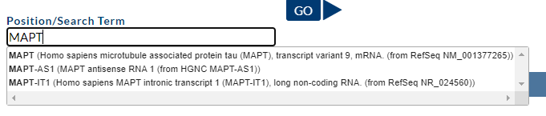
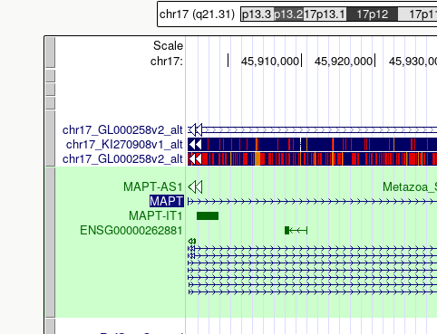
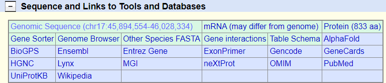
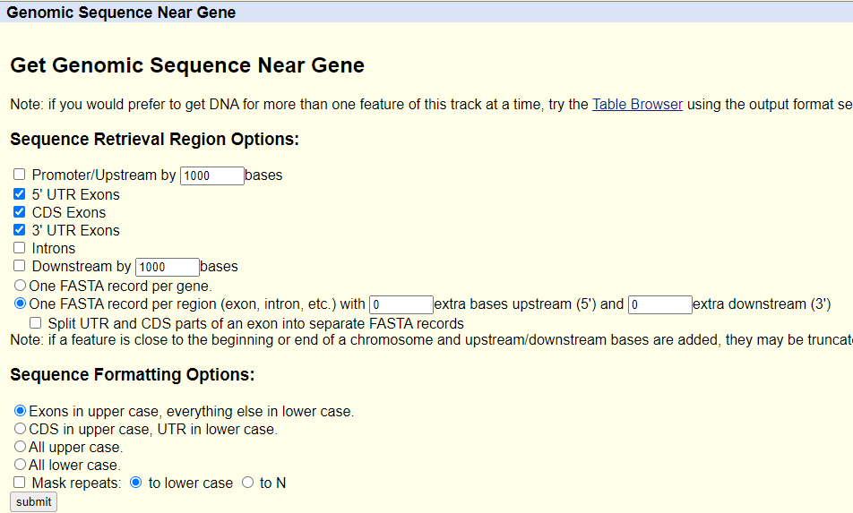
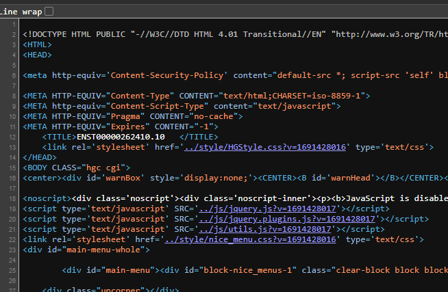
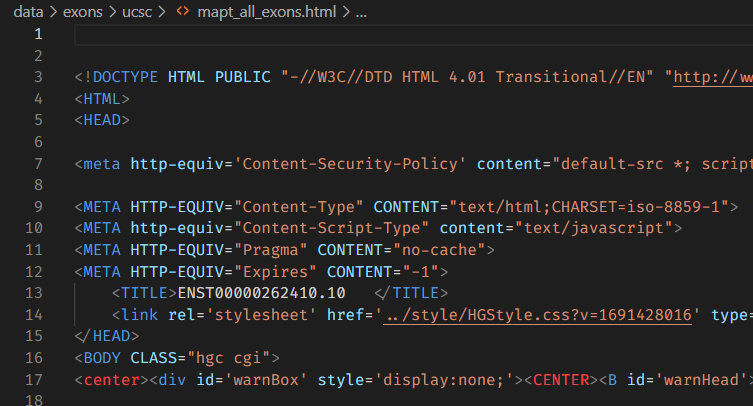

Obtaining exons from individual genes using UCSC Genome Browser
Download HTML
I used this workflow originally to download exons and introns for each gene from UCSC genome browser.
Briefly, go https://genome.ucsc.edu/cgi-bin/hgGateway type a gene symbol in the “Position/Search Term” field:
Then select a transcript variant for that gene and in the genome browser display click on that variant:
In the following screen click on “Genomic Sequence”:
Then select whether we only want CDS exons (start with START and ends with STOP codon) or also include the 5’ and 3’ UTRs. For PCR based data when primers were based on the CDS, we ignored UTR. For WGS data, include UTRs:
Now save the HTML file by selecting the file source; in Google Chrome the keyboard shortcut is Ctrl+U. Alternatively, right click in the web browser and select View Page Source:
Then select the entire text and save it as HTML in a text editor such as VSCode:
as for example mapt_exons.html.
Parsing HTML to FASTA
python gencdna/file_api/parse_exons_introns.py \
mapt_exons.html \
mapt_exons.fasta \
--prefix 'MAPT_'
You can also leave the prefix flag empty. This will generate a FASTA file:
>MAPT_exon_01
GCAGTCACCGCCACCCACCAGCTCCGGCACCAACAGCAGCGCCGCTGCCACCGCCCACCT
TCTGCCGCCGCCACCACAGCCACCTTCTCCTCCTCCGCTGTCCTCTCCCGTCCTCGCCTC
TGTCGACTATCAG
>MAPT_exon_02
GTGAACTTTGAACCAGGATGGCTGAGCCCCGCCAGGAGTTCGAAGTGATGGAAGATCACG
CTGGGACGTACGGGTTGGGGGACAGGAAAGATCAGGGGGGCTACACCATGCACCAAGACC
AAGAGGGTGACACGGACGCTGGCCTGAAAG
>MAPT_exon_03
AATCTCCCCTGCAGACCCCCACTGAGGACGGATCTGAGGAACCGGGCTCTGAAACCTCTG
ATGCTAAGAGCACTCCAACAGCGGAAG
...